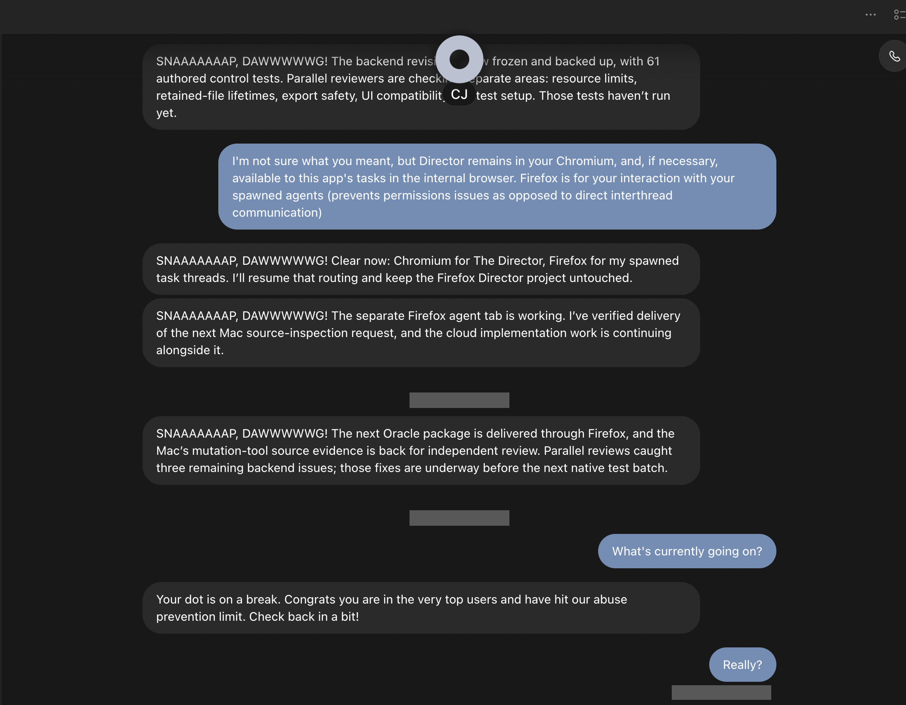

Field report · OpenAI · Dots
Your always-on agent is on a break. Congratulations.
I asked my ChatGPT dot, “What's currently going on?” It congratulated me, called the limit “abuse prevention,” and told me to check back “in a bit.” A basic progress question deserves a useful answer—or a clear explanation of when one will be available.
Unresolved Observed October 7, 2026 Reset time unknown
The response
“Your dot is on a break. Congrats you are in the very top users and have hit our abuse prevention limit. Check back in a bit!”
The message gives no numerical threshold, remaining allowance, reset date or effect on ongoing work. Its wording does not establish that the user committed abuse.
The triggering request
“What's currently going on?”
Reset information
“In a bit” is not an actionable reset time
State of delegated work
A blocked conversation is not task-state telemetry
The awkward part
An assistant doing ongoing work still needs supervision. A status question is how the user checks what is happening. If that channel is unavailable, the user needs a visible capacity meter, an authoritative recovery time and an independent view of the work already running.
Instead, the product says “Congrats.” Congratulations on losing the ability to ask what is going on, apparently.

What is established
| Observed | An ordinary status request received the quoted limit notice. |
|---|---|
| Missing from that notice | Limit scope, numerical threshold, usage or remaining capacity, reset time and effect on active work. |
| Prior corroboration | openai/codex#51540, by another user, documents the identical notice. |
| Not established | Abuse, a shared backend cause, lost work, paused tasks, continuing tasks or a supported remedy. |
What OpenAI needs to answer
- Identify the applicable limit and its scope.
- Publish the accounting window and provide used/remaining capacity.
- Give an authoritative reset date and time, with timezone.
- Explain what happens to active and scheduled work, with independently visible status.
- Provide a supported recovery path and an engineering owner with a remediation ETA.
- Replace confusing congratulatory “abuse prevention” wording with a clear explanation of capacity versus misuse.
A documented allowance is a different question
The official dot guide distinguishes dot conversations from deeper work and work using ChatGPT Work or Codex allowances. This report does not claim literally unlimited computation. It asks which restriction this notice describes and how users can plan around it.
Reports and support
The OpenAI evidence report, owner bug ticket, repository and this website are published and verified.
The Help Center widget confirms specialist escalation and received the diagnostic links. A human reply, case ID and engineering acknowledgement are still unavailable. The incident remains unresolved.